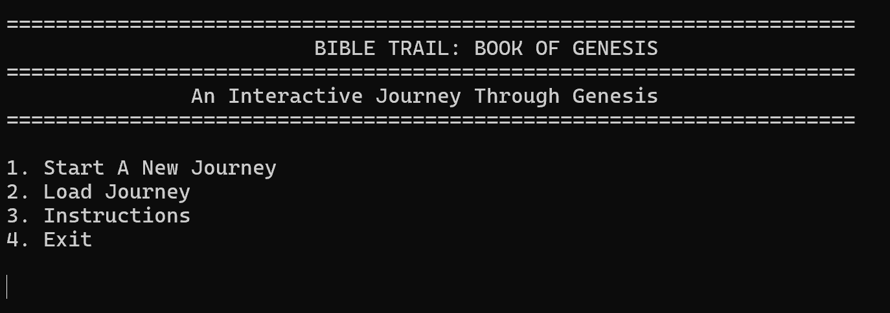

Languages
C++, HTML, CSS
Student Developer Portfolio
I am an aspiring indie developer and startup generalist who enjoys building projects from the ground up and turning ideas into working applications. I want to develop a well-rounded skill set that includes programming, database development, UI design, and cloud infrastructure. My goal is to understand every stage of the development process, from planning and writing code to launching and maintaining a finished product. Moving forward, I hope to build innovative, user-focused applications, explore new technologies, and eventually create and launch my own software products independently.
About Me
My journey into development began in 2011, when I discovered my passion for art, technology, and problem-solving. I initially became interested in website development, but as technology shifted toward mobile experiences, I wanted to explore mobile app development and learn how to build useful digital products. That curiosity continues to shape my goal of becoming an indie developer and startup generalist who can take an idea from concept to completion. Throughout this program, I have grown from understanding individual pieces of code to building a complete C++ console application from the ground up. One of my biggest challenges was learning how multiple classes interact and how objects work together within a larger system. Through research, practice, and debugging, I strengthened my understanding of object-oriented programming, pointers, references, input validation, and code organization. I also learned the importance of planning, testing, and refining my code to create a more reliable application. What I enjoy most is solving problems, connecting different pieces of a system, and turning ideas into something functional. Moving forward, I want to continue developing my software architecture skills, explore new technologies, and build applications independently. My goal is to become a well-rounded developer who can design, develop, and launch complete products while continuing to learn and grow with every project.
C++, HTML, CSS
Visual Studio, Git, GitHub
Object-oriented programming, debugging, and clean code
Featured Work
Welcome to my projects portfolio, where I showcase the applications and programs I have developed throughout my learning journey. Each project demonstrates my growing skills in programming, object-oriented design, problem-solving, and software development. Through these projects, I aim to build practical experience, strengthen my technical abilities, and continue growing as a developer.

C++ Console Application
Genesis Journey is a C++ text-based adventure game that I improved by refining gameplay balance, inventory management, travel mechanics, and event choices. I adjusted starting resources to create a greater challenge, improved item-use conditions to prevent unnecessary consumption, and implemented a journey reset system to ensure each new game starts correctly. I also reviewed resource calculations, win and loss conditions, and player instructions to improve consistency and usability. This milestone strengthened my skills in object-oriented programming, debugging, refactoring, and game logic design while preparing the project for save and load functionality and further testing.
One major challenge I faced while building the app was managing the player's resources and making sure the game ended correctly. I had to ensure that food, water, and health decreased or increased at the right times, and that inventory items worked properly. I also had to fix issues with menu input validation and traveling between locations. Testing and debugging helped me make the game more reliable and enjoyable for player